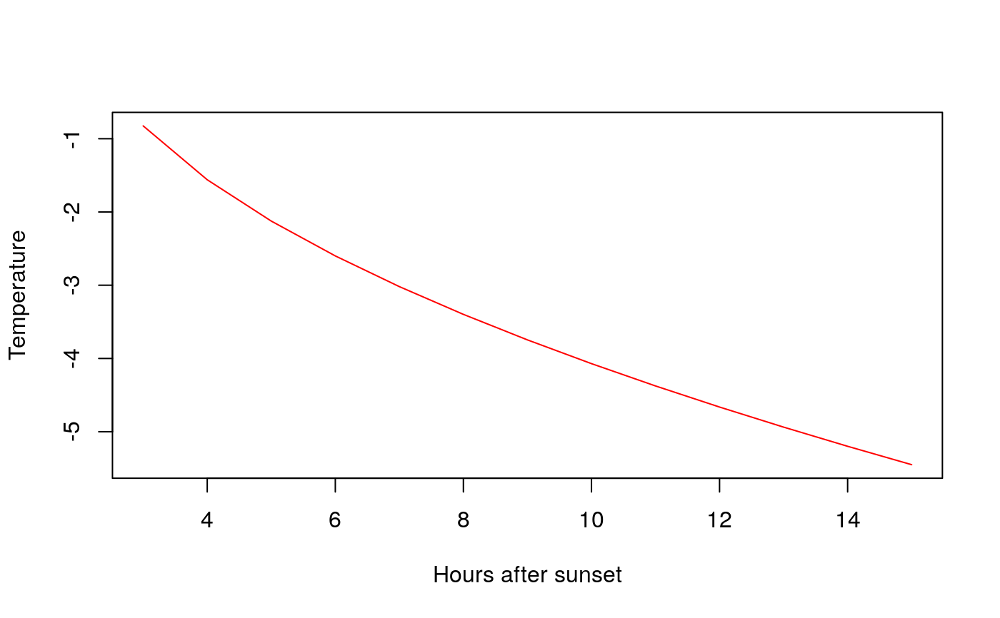

Predict the trend of the temperature during a frost night. This equation has been taken from UC Davis formula [1] which was also published in the FAO book mentioned in predFAO function.
[1] <http://biomet.ucdavis.edu/frostprotection/fp002.htm>
getTrend(Tmin, t2, n, plot = FALSE)
Arguments
| Tmin | predicted minimum temperature. |
|---|---|
| t2 | temperature 2 hours after sunset, where t2 > Tmin |
| n | how many hours between sunset and sunrise, an integer value where n > 2 |
| plot | TRUE if you want to see the trend plot, otherwise FALSE. Default value: FALSE |
Value
A data frame with the (x,y) points plotted, where y values are the n-2 values of estimated temperatures
Examples
getTrend(Tmin = 22.2,t2 = 33.7,n = 15) # in °F degress#> x y #> 1 3 30.51047 #> 2 4 29.18933 #> 3 5 28.17558 #> 4 6 27.32095 #> 5 7 26.56800 #> 6 8 25.88729 #> 7 9 25.26131 #> 8 10 24.67866 #> 9 11 24.13142 #> 10 12 23.61383 #> 11 13 23.12154 #> 12 14 22.65116 #> 13 15 22.20000getTrend(Tmin = -5.45,t2 = 0.95,n = 15,plot=TRUE) # in °C degress#> x y #> 1 3 -0.8250406 #> 2 4 -1.5602865 #> 3 5 -2.1244606 #> 4 6 -2.6000813 #> 5 7 -3.0191115 #> 6 8 -3.3979438 #> 7 9 -3.7463161 #> 8 10 -4.0705731 #> 9 11 -4.3751219 #> 10 12 -4.6631713 #> 11 13 -4.9371438 #> 12 14 -5.1989211 #> 13 15 -5.4500000